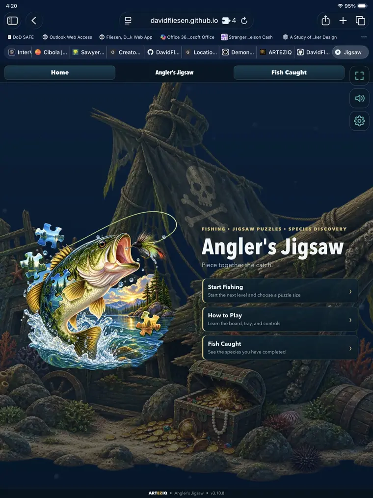
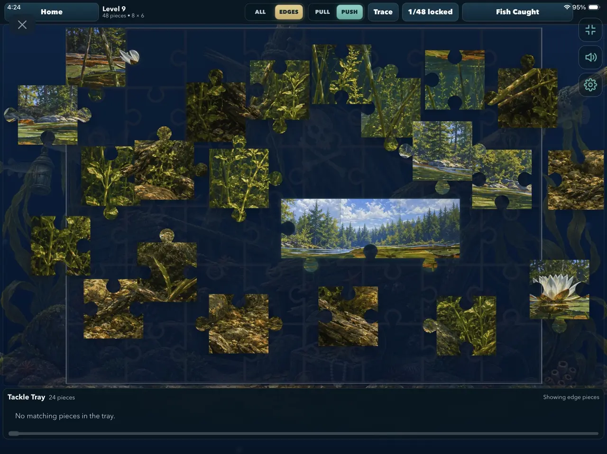
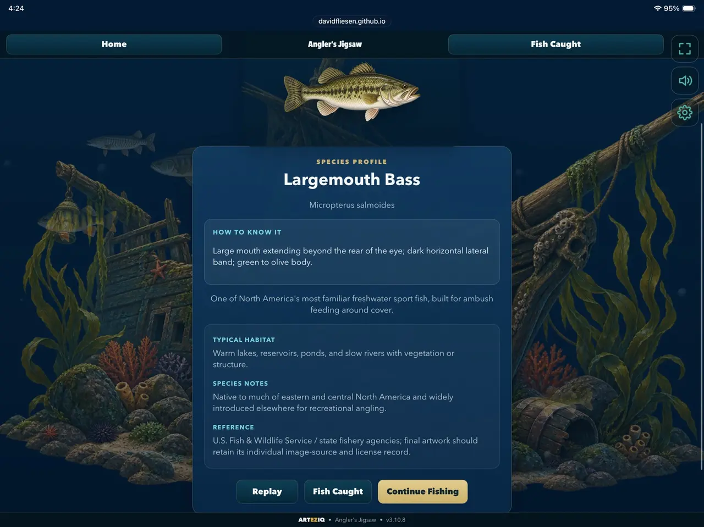

Fishing • Jigsaw puzzles • Species discovery
Angler's Jigsaw
Piece together the catch.
Catch fish by completing beautiful jigsaw puzzles, then visit your Fish Caught collection to learn about every species you have discovered. It is a fun, relaxed way to sharpen fish-recognition skills one puzzle at a time.
- Choose from multiple puzzle sizes
- Fishing and underwater scenes
- Helpful edge and trace controls
- Collect fish as levels are completed
- Study identification and habitat clues
- Designed for phones and tablets